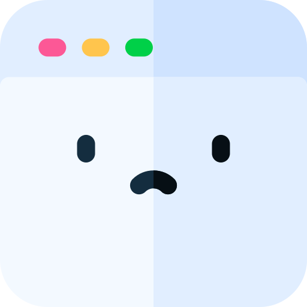

<ion-header [translucent]="true">
  <ion-toolbar>
    <ion-title style="margin-top: 15px;">
      
      Mundo hoje
    </ion-title>

    <ion-searchbar animated="true" style="margin-top: 10px;" placeholder="Buscar"></ion-searchbar>

  </ion-toolbar>
</ion-header>

<ion-content [fullscreen]="true">

  <ion-refresher slot="fixed" (ionRefresh)="doRefresh($event)">
    <ion-refresher-content></ion-refresher-content>
  </ion-refresher>

  <div class="notFound" *ngIf="!notice.items">
    Nenhuma notícia encontrada <br>
    
  </div>

  <ion-card *ngFor="let item of notice.items">
    <ion-item>
      
    </ion-item>

    <ion-card-subtitle>
      Publicado em: {{item.data_publicacao.toString().split(' ')[0]}}
    </ion-card-subtitle>
    <ion-card-title>
      {{item.introducao}}
    </ion-card-title>
  </ion-card>

  <ion-content class="allLoads" *ngIf="allLoads">
    Todas as notícias carregadas
  </ion-content>

  <ion-infinite-scroll threshold="100px" (ionInfinite)="loadData($event)">
    <ion-infinite-scroll-content
      loadingSpinner="dots">
    </ion-infinite-scroll-content>
  </ion-infinite-scroll>

  <ion-content *ngIf="loadCenter">
    <ion-spinner class="spinnerCenter" name="dots"></ion-spinner>
  </ion-content>

  <div id="container">

  </div>
</ion-content>
